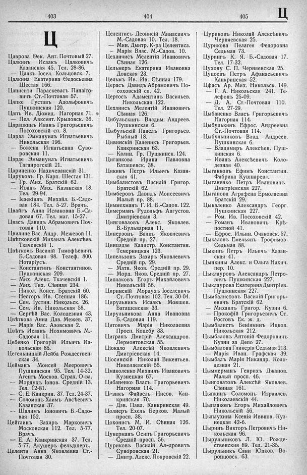

Лист источника 485
Скан

Распознанный текст
403
Ц
Цаврова Ѳек. Ант. Почтовый 27.
Цалкинъ Исаакъ Цалковичъ
Казанская 45. Тел. 28-86.
— Цалкъ Іосел. Кольцовск. 7.
Цалкина Екатерина Ѳедосьевна
Шестая 166.
Цанисити Параскевасъ Панаіто-
вичъ Ст.-Почтовая 57.
Цапке Густавъ Адольфовичъ
Пушкинская 120.
Цапъ Ив. Діомид. Нагорная 71.
— Пел. Авксент. Крыловск. 36.
Царапкинъ Иванъ Григорьевичъ
Посоховскій сп. 8.
Царда Эммануилъ Игнатьевичъ
Никольская 196.
— Божена Игнатьевна Суво-
ровская 11.
Царде Эммануилъ Игнатьевичъ
Таганрогскій 21.
Цариненко Нахичеванскій 31.
Царуковъ Гр. Карп. Шестая 131.
— Гр. Мих. Братскій 62.
— Иванъ Мих. Казанская 18.
Тел. 29-94.
— Іезекіилъ Михайл. Б.-Садо-
вая 184. Тел. 5-27. Врачъ.
Цвайгъ Анна Исааковна Б.-Са-
довая 67. Тел. маг. 15-27.
Цвасъ Давидъ Абрамовичъ Поч-
товая 110.
Цвилине Вас. Андр. Межевой 11.
Цвѣтковскій Михаилъ Алексѣев.
Ткачевскій 1.
Цвѣтковъ Василій Тимофѣевичъ
Б.-Садовая 98. Телеф. 800.
Нотаріусъ.
— Константинъ Константинов.
Пушкинская 209.
— Мих. Алекс. Ткачевскій 1.
— Мих. Тих. Сѣнная 234.
— Никол. Конст. Братскій 60.
— Несторъ Ив. Степная 186.
— Сем. Іустин. Никольск. 26.
— Сем. Ив. Никольская 58.
— Сергѣй Вас. Колодезная 43.
Цвѣткова Анна Дав. Межев. 37.
— Марія Вас. Азовская 2.
Цвѣтъ Исаакъ Нохимовичъ М.-
Садовая 11.
Цебенко Григорій Ильичъ Из-
вольская 85.
Цегельницкій Лейба Рождествен-
ская 34.
Цейманъ Моисей Мееровичъ
Пушкинская 95. Тел. 14-32.
Агентъ Москов. Страх. О-ва.
— Мордухъ Іонов. Средній 13.
Тел. 12-81.
— С. Е. Канкрин. 37. Тел. 24-37.
— Соломонъ Хаимъ Авсѣевичъ
Казанская 37.
— Шалимъ Іоновичъ Б.-Садо-
вая 152.
Цейтлинъ Захаръ Марковичъ
Московская 112. Тел. 5-77.
Врачъ.
— Е. А. Канкринская 37. Тел.
5-77. Акушеръ фельдшеръ.
Целенти Анна Яковлевна Ст.-
Почтовая 30.
404
Целентисъ Деонисій Минаевичъ
М.-Садовая 10. Тел. 18.
— Мин. Дмитр. К-ра Целентиса.
— Марія Влас. М.-Садов. 10.
Цеханчисъ Мелентій Ивановичъ
Сѣнная 126.
Цельмеръ Екатерина Ивановна
Донская 23.
Цельмъ Ив. Ив. Сѣнная 179.
Церасъ Давидъ Абрамовичъ По-
соховскій сп. 42.
Цертосъ Адаментинъ Васильев.
Никольская 122.
Цеханисъ Мелентій Ивановичъ
Сѣнная 126.
Цибульскинъ Владим. Андреев.
Пушкинская 6.
Цыбульскій Павелъ Григорьев.
Рыбный 18.
Цивинскій Каленикъ Григорьев.
Канкринская 63.
— Калин. Гр. Пушкинск. 124.
Циганкова Ирина Павловна
Баташевск. 38.
Цикинъ Петръ Ильичъ Казан-
ская 41.
Цимбалистовъ Василій Григор.
Братскій 62.
Цимберовъ Давидъ Моисеевичъ
Малый пр. 88.
Циммехманъ Г. И. Б.-Садов. 122.
Цимерманъ Рудольфъ Августов.
Дмитріевская 3.
Цинговаловъ Алекс. Яковлев.
В.-Бульварная 11.
Цинерзонъ Валкъ Яковлевичъ
Средній пр. 27.
Цинцадзе Калистр. Константин.
Темерницкая 123.
Ципельзонъ Захаръ Яковлевичъ
Средній пр. 29.
— Матв. Яков. Средній пр. 29.
— Морд. Яков. Средній пр. 27.
Циплаковъ Егоръ Михайловичъ
Никольскій 56.
Циринскій Мордухъ Іоселевичъ
Ст.-Почтовая 102. Тел. 30-04.
Цирульникъ Исаакъ Мовшев.
Баташевская 33.
Цирульникова Анна Ивановна
Б.-Садовая 119.
Цитовичъ Марія Николаевна
Просп. Коцебу 33.
Цитранъ Дмитрій Александров.
Лермонтовская 55.
Ціокало Алексѣй Яковлевичъ
Дмитріевская 14.
Ціосинскій Николай Викентьев.
Николаевскій 55.
Цмаколенко Михаилъ Ивановичъ
Кузнецкая 67.
Цибаненко Власъ Григорьевичъ
Нагорная 114.
Цезикъ Файвель Нисов. Кан-
кринская 70.
— Дав. Павл. Канкринская 49.
Цолнеръ Ехель Берков. Малый
просп. 38.
Цохонисъ М. И. Сѣнная 126.
Тел. 20-07.
Цукерманъ Осипъ Григорьевичъ
Средній просп. 56.
Цуриковъ Василій Ал-дровичъ
Суворовская 21.
— Дмитр. Алекс. Покровскій 22.
405
Ц
Цуриковъ Николай Алексѣевичъ
Черняевская 25.
Цурикова Пелагея Федоровна
Седьмая 73.
Цурингъ К. Я. Б.-Садовая 17.
Тел. 17-32.
Цухону С. П. Черняевская 25.
Цуцоевъ Петръ Афанасьевичъ
Канкринская 52.
Цфасъ Ар. Мих. Никольск. 149.
— Г. А. Никольская 241. Те-
лефонъ 25-09.
— Д. А. Ст.-Почтовая 110.
Тел. 27-29.
Цыбаненко Власъ Григорьевичъ
Нагорная 114.
Цыбулькинъ Ефрос. Андреевна
Ст.-Почтовая 114.
Цыбульниковъ Влад. Андреев.
Пушкинская 6.
— Владимиръ Алексѣев. Пуш-
кинская 6.
— Иванъ Алексѣевичъ Коло-
дезная 40.
Цыганковъ Ефимъ Константин.
Фабрика Кушнарева.
Цыганенко Петръ Ивановичъ
Дмитріевская 227.
Цыганова Аграфена Ермолаевна
Братскій 29.
Цыкаленко Александръ Георг.
Пушкинская 227.
— Ром. Ив. Посоховскій 42.
— Романъ Ивановичъ Крѣ-
постной 41.
— Ефрос. Ильин. Очаковск. 57.
Цыкаловъ Емельянъ Трофимов.
Седьмая 88.
Цыкинъ Петръ Ильичъ Казан-
ская 41.
Цынкины Алекс. и Ольга Нахич.
пер. 10.
Цыклауровъ Александръ Петро-
вичъ Пушкинская 227.
Цыклаурова Екатерина Дмитріев.
Пушкинская 227.
Цымбалистовъ Василій Григорь-
евичъ Братскій 62.
— Михаилъ Григор. Кузни 6.
— Прокофій Григорьевичъ Ст.
Ростовъ Ек. ж. д.
Цымбалистъ Беніяминъ Ицков.
Никольская 212.
Цымбаловъ Антоній Федоровичъ
Кузни за Депо 27.
Цымбалова Гликерія Седьмая 213.
— Марія Иван. Графская 39.
Цымбалъ Марія Никандр. Коло-
дезная 21.
Цыммерманъ Генрихъ Джанов.
Малый просп. 46.
Цынговатовъ Алексѣй Яковлев.
Сѣнная 161.
Цыпкинъ Соломонъ Израилев.
Николаевскій 44.
Цыплаковъ Егоръ Михайловичъ
Никольскій 56.
Цыплухина Ксенія Иввнов. Куз-
нецкая 42-б.
Цыринъ Викторъ Петровичъ Ни-
кольская 96.
Цырульниковъ Л. Ю. Рожде-
ственския 89. Тел. 21-35.
Цырульникъ Сани Юдков. Во-
ронцовск. 63.